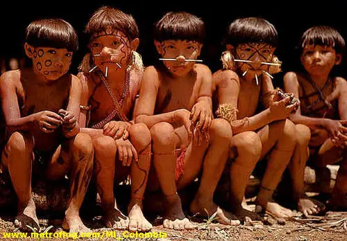

"Amazonas"
Región: Amazónica
Puntos de Interés
Isla los micos
Esta isla se creó por Mike Tsalikys, en 1960, con el objetivo de dejar un espacio libre para la cría de micos y reptiles. Hoy en día es un lugar muy especial para el turismo, se realizan caminatas, donde los visitantes pueden interactuar con las especies de titís de la región. Además se puede hacer canopy y canotaje.
Reserva natural flor de loto
Un lugar donde se pueden dar paseos en canoa, pescar y observar el Victoria Regia (la flor de loto más grande del amazonas). El sitio cuenta con servicio de hospedaje y restaurante bar.

Resguardo indígena Witoto de Monilla Amena
Los Witoto (Huitoto) Habitan este hermoso paraíso, y reciben visitantes para compartir y con ellos. Está ubicado muy cerca de Leticia y es una experiencia imperdible.
Lago Yahuarcacas
Hacer una visita guiada, en lancha por el Yahuarcacas, un lago espectacular ideal para tomar fotos y hogar del delfín rosado.
Gastronomía de la región